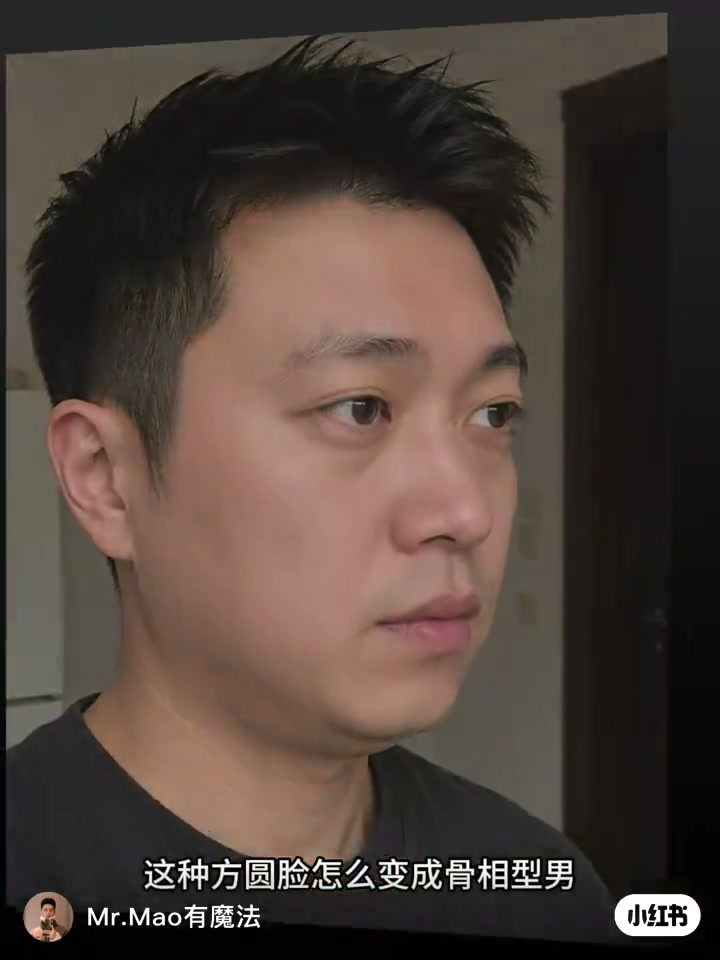
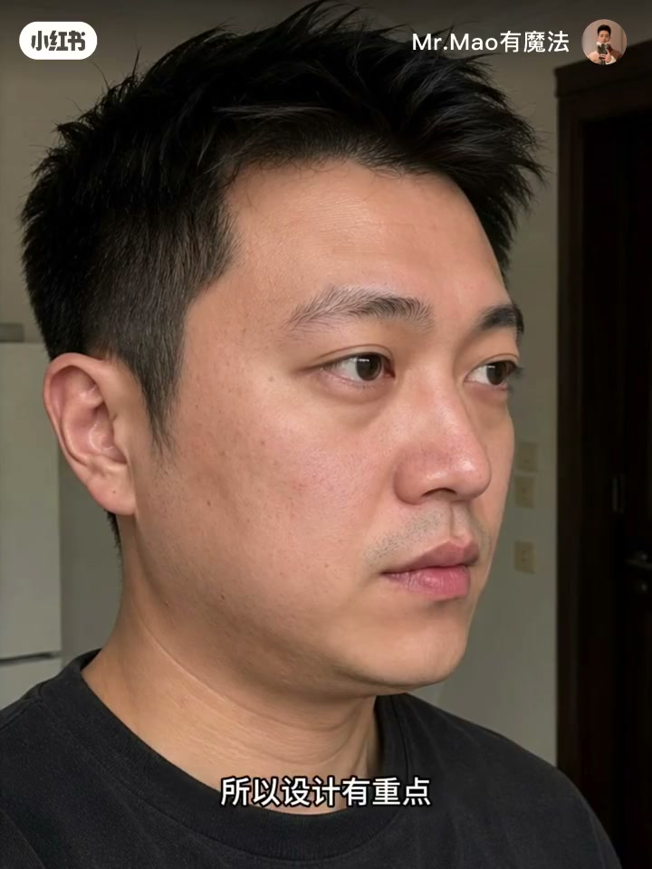
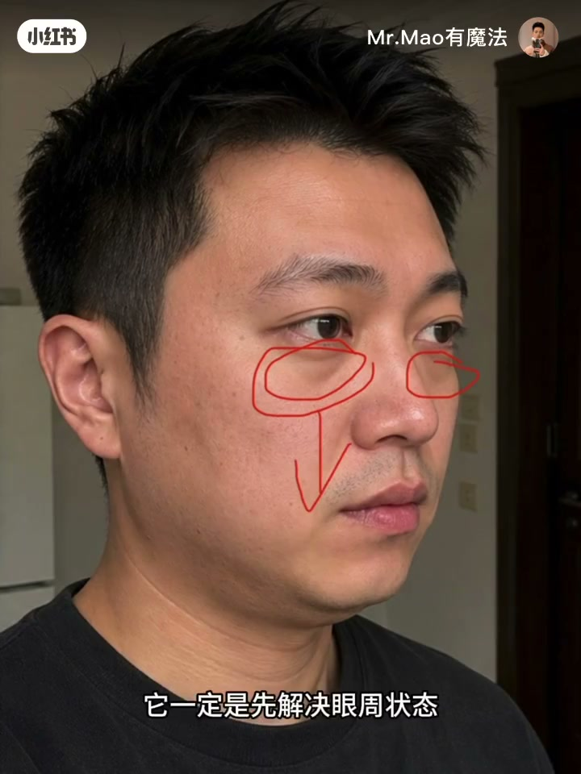
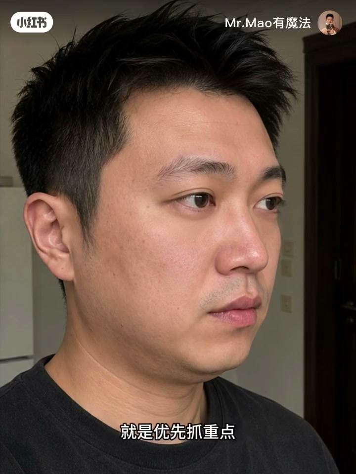
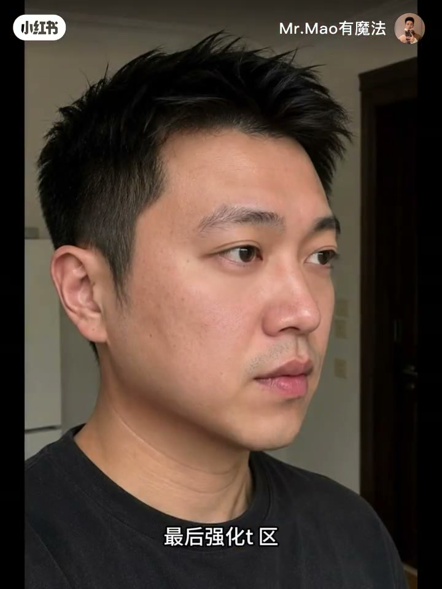

内容要点
一支 40 秒的男性变美思路分享。针对「方圆脸怎么变成骨相型男」的问题，纠正一个常见误区——不是只拉长下巴就行。核心方法论叫「设计」：优先抓重点、效率最大化，按顺序解决眼周疲态、双下巴油腻、下巴后缩土气、气质张力四个问题。
知识结构
方圆脸显土，你以为只是下巴短且后缩。但光拉长下巴，还是土气油腻不精神——状态像老黄牛耕了三天三夜的地，眼袋都要落地上了。
什么是设计？优先抓重点、效率最大化。先解决眼周状态弱化疲态（瞬间精神提气），再减脂塑形优化双下巴、解决油腻，再优化下巴后缩解决土气，最后强化气质提升男性张力。画个眉毛，土肥圆秒变都市精英。
方圆脸变骨相型男不是动下巴，而是「设计」：按优先级——先消除眼周疲态、再减脂去双下巴、再纠正下巴后缩、最后强化气质张力。效率最大化的关键是不贪多、抓重点。
00:00-00:20问题不是下巴
「今天我们来看一下这种方圆脸怎么变成骨相型男。你一定觉得是下巴太短且有点后缩。」
「我们拉长下巴还是显得土气油腻不精神。」——这说明光调下巴根本不够。
「它的状态就像老黄牛耕了三天三夜的地，眼袋都要落地上了。」所以第一步要先解决眼周状态、弱化疲态感，「是不是瞬间精神提气了？可以再战七天七夜了。」



00:20-00:40设计：按优先级解决
「什么叫设计？就是优先抓重点、效率最大化。」这是全片的核心理念——变美不是把所有问题平均用力，而是抓最关键的那个。
四个步骤按顺序来：第一「减脂塑形、优化双下巴、解决油腻问题」；第二「优化下巴后缩、解决土气问题」；第三「强化气质、提升男性张力」。
「画个眉毛，是不是土肥圆秒变都市精英？有魅力有张力的型男。」——一个优先级正确的设计，改变气质只需要一个小动作。


完整转录（20段）
以下文本由 Whisper medium 模型自动转录，可能存在少量识别误差，已尽可能修正。
今天我们来看一下这种方圆脸怎么变成骨向型男
你一定觉得是下巴太短且有点后缩
我们拉长下巴还是显得吐气油腻不精神
所以设计有重点思路很重要
它的状态就像老黄牛耕了三天三夜的地
眼袋都要落地上了
它一定是先解决眼周状态弱化疲态感
是不是瞬间精神提气了
可以再战七天七夜了
什么叫设计
就是优先抓重点效率最大化
其次
减脂塑形优化双下巴
解决油腻问题
再是优化下巴后缩解决吐气问题
最后强化气区
提升男性张力
画个眉毛
是不是土肥园秒变都市精英
有魅力有张力的大型男